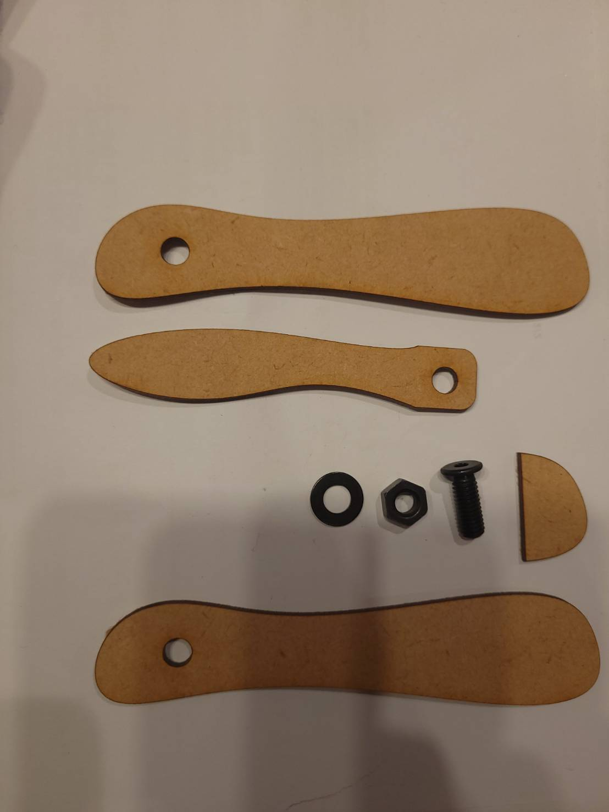

ピンセット制作課題
レーザーカッター課題
人の心を動かすもの
今回僕は、レーザー加工機を使ってバターナイフを作りました。
まず、今回の課題に取り組むにあたり、感情を動かされるものってなんだろう？
どんな感情が一番人気持ちを動かすのだろう？というところから考えました。
ものに宿る感情
今回は、物作りをするので、モノに宿る感情というところにフォーカスを当てて
考えてみました。その結果、”愛着”がものに宿る感情の中で一番強い感情なのではないか
という答えに辿り着きました。
愛着の宿るものとは
愛着とは、長く使ったもの。大切なエピソードを有するもにあると考えます。
例えば...親の形見,何年も着たジャケット,誕生日プレゼント,などなど...
愛着とはものと人を繋ぐ特別な感情であり、どんなものにも愛着が湧く可能性があると考えられます。
そこで、僕は今回の作成では、『好きなことに使えて、これから使っていく過程で愛着を獲得していけるもの』
を制作していこうと思いました。
バターナイフ
ここからは実際何を作ったのか解説していきます。
ここまでで話した通り、僕は愛着と好きなものを制作のベースにしました。
まず、好きなものは食事。中でもパンに絞りました。そしてパンに使える道具を考えたところ
バターナイフを思いつきました。そして素材もMDFと、都合よく木材であったのでバターナイフに決めました。
最初の設計図

最初はこのような構成だったのですが、あまりに殺風景というのか、構造が単純でレーザーカッター
で制作する必要性は薄いなと感じたので作り直しました。
二度目の設計図


今回は、普通のナイフのように折りたためるバターナイフを作ることにしました。
ハンドル部分は2枚刷り、ブレードを挟むという構成にしました。この時、
ブレード分の差を埋めるためのパーツも刷りました。そして、ブレードとハンドルに6mmの穴を開けて、
そこをネジとボルトで接合して折り畳みする形にしました。
レーザー加工
ここまでで制作した図面を持って、レーザー加工機で実際に作ってみました。

加工し終わったパーツがこれらです。実際にM6のネジとボルトも買いました。
組み立て
早速組み立ててみました
まずは、片方のハンドルとブレードを繋ぎ、隙間合わせをボンドで止めます。
次に、残ったハンドルとネジを通し、隙間合わせとこちら側のハンドルもボンドで止めます。
最後にワッシャーを通し、ボルトを締めて完成です。
こちらが折りたたんだ写真です
総括
今回、全体を通して割とスムーズに進みました。ですが、作った後に思いついたのですが
フォークや定規など、さまざまなツールも追加して、十特ナイフのようにしても面白かったなと思いました
設計ファイル
バターナイフ１ バターナイフ２ バターナイフ3